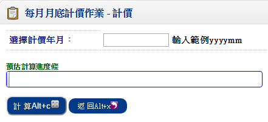
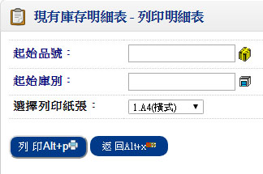
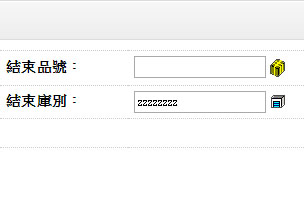
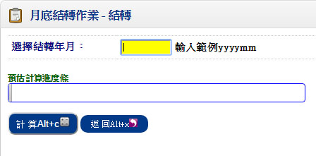
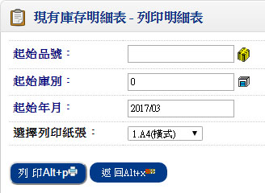
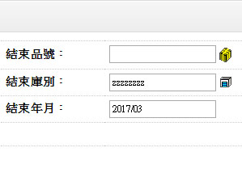

歡迎來到 PHP雲端ERP 的世界
PHP 是開發 雲端ERP 應用程式的工具組。提供簡易的介面和邏輯結構來使用豐富的函式庫，其目的是讓你加 快開發速度。使用 PHP 只需要寫少少的程式，創造力可專注在專案開發。
雲端ERP 使用手冊目錄
伍、其他資料
一、每月月底計價作業
■程式代號：INVB03
■作業目的：計算品號當月份的月加權平均單價，並更新「庫存異動明細資料檔」及「庫存異動單據」，並更新「品號資料檔」之單頭及單身庫存金額及數量。
■輸入畫面：
- ■作業說明：
- 計價年月
- 輸入想要作業的年月(例:201601)
二、庫存明細表
■程式代號：INVR18
■作業目的：列印每一特定時間日各項品號存放在各庫之庫存數量、庫存金額及單位成本等之統計資料。
■輸入畫面：
 - ■作業說明：
- 每一品號皆需印出
- 列印各庫明細
- 僅列印庫存數量異常者
- 表示檢查該『資料日期』的庫存數量為『負值』者才需印表
- 若您的「共用參數設定作業」中『庫存不足不允許出貨』已經管制了，就應該不會發生此種資料異常
- 僅列印庫存金額異常者
- 表示檢查該『資料日期』的庫存金額為『異常』者才需印表
- 異常的定義為：
- 數量為零，但金額不為零
- 數量不為零，但金額為零
- 數量小於零，或金額小於零
- 列印庫存為零者
- 『ˇ』表不論庫存數量和庫存金額是否為零，都要列印。否則僅列印庫存數量和庫存金額不為零者
- 資料處理邏輯：
- 以資料日期找尋最近一筆『品號每月統計維護資料』之各庫品號月初數量及金額，並依選項輸入條件篩選符合的『異動明細資料』，推算至資料日期的庫存數量及金額，並算出報表的『單位成本』
- 資料並以品號類別的會計科目進行資料彙總
- 雙單位制者，報表之小計或彙總時數量只加總至整數位
- 因為『異動明細資料』會因為「成本計價作業」所影響，故若要本報表資料正確一點請先執行「成本計價作業」
- 若您的成本計價方式為『月加權成本制』，且採購入庫或生產入庫有分不同庫別者，又入庫的單價不同，則輸入不同庫別時，推算出來的數量會正確，但是金額資料與不分庫別會有差異，因為這些金額資料乃來至『異動明細資料』
三、月底結轉作業
■程式代號：INVB06
■作業目的：結算當月份的存貨及統計當月的庫存異動，產生品號現行年月異動統計資料，並將現行年月累加。
■輸入畫面：
肆、進耗存統計表
■程式代號：INVR19
■作業目的：統計期間內各品號於各庫別之期間之銷貨、銷退、領料量、退料、轉撥量、調整量入、調整量出，並由期初及本期異動計算出期末庫結存。
■輸入畫面：
 - ■作業說明：
- 資料處理邏輯
- 以資料日期找尋最近一筆『品號每月統計資料』之各庫品號月初數量及金額，以『異動明細資料』推算起始日期的期初數量及金額，並直接將符合條件的『異動明細資料』詳列於本期異動。由期初加減本期異動等於期末結存
- 計算期末＝期初＋本期入庫－本期銷貨－本期領料＋本期轉撥（入）＋本期調整（入）－本期出庫＋本期銷退＋本期退料－本期轉撥（出）－本期調整（出）
- 雙單位制者，報表之小計或彙總時數量只加總至整數位
- 因為『異動明細資料』會因為「成本計價作業」之執行所影響，故若要本報表資料正確一點請先執行「成本計價作業」
- 若您的成本計價方式為『月加權成本制』，且採購入庫或生產入庫有分不同庫別者，又入庫的單價不同，則輸入不同庫別時，推算出來的數量會正確，但是金額資料與不分庫別會有差異，因為這些金額資料乃來自『異動明細資料』作業